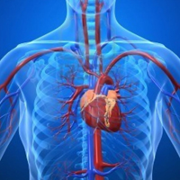
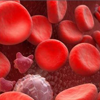

Рух крові по судинах

Серцевий цикл. Робота серця
Рух крові по судинах називають кровообігом. Система органів кровообігу складається із серця і кровоносних судин. Свої основні функції (транспортну і захисну) кров виконує завдяки постійній циркуляції по організму. Цей рух забезпечується ритмічним скороченням серця, яке, мов насос, перекачує кров по кровоносній системі. Серце складається з двох окремих таких «насосів» - правого та лівого. Правий прокачує кров через легені, де вона збагачується киснем. Потім кров надходить до лівої частини серця, звідки вирушає до всіх тканин організму. Припинення руху крові на короткий час є смертельно небезпечним для організму. Адже клітини організму, особливо нервові, не можуть функціонувати навіть кілька хвилин без кисню і поживних речовин, які переносяться кров’ю.
Серце людини на 2/3 розміщене у лівій частині грудної порожнини, верхівкою спрямоване вперед, вниз і ліворуч. Маса серця людини коливається в межах 250-360 г.
Серце людини чотирикамерне і складається з двох передсердь (верхня частина серця) і двох шлуночків нижня частина серця).
Серце працює ритмічно. Скорочення серця – систола - чергується з його розслабленням – діастолою. Скорочення і розслаблення передсердь і шлуночків за нормальних умов чітко взаємоузгоджені й становлять єдиний цикл роботи серця. Частота серцевих скорочень у стані спокою індивідуальна і коливається від 60 до 80 ударів на хвилину (уд./хв). Серцевий цикл починається зі скорочення передсердь, яке триває 0,1 секунди. За цей час кров з передсердь виштовхується у шлуночки. Кров з правого шлуночка виштовхується через венозний стовбур до легеневих артерій, а кров з лівого шлуночка – до аорти. Скорочення шлуночків триває приблизно 0,3 секунди. Після цього вони розслабляються і упродовж наступних 0,4 секунди весь серцевий м’яз перебуває у стані спокою або загального розслаблення.
Тривалість серцевого циклу при частоті серцевих скорочень 72 уд./хв. становить 0,8 секунди . Період відпочинку 0,4 секунди достатній для того, щоб серце повністю відновило свою працездатність. Коли частота серцевих скорочень збільшується, тривалість серцевого циклу скорочується переважно за рахунок періоду відпочинку.
Кількість крові, яку серце викидає в аорту за одне скорочення, називають систолічним об’ємом крові. За кожне скорочення серце викидає в аорту 70 мл крові. Знаючи систолічний об‘єм крові (СОК) і частоту серцевих скорочень (ЧСС), можна визначити , скільки крові серце перекачує за той чи інший проміжок часу і яку роботу при цьому воно виконує. При частоті серцевих скорочень 72 уд./хв.. хвилинний об’єм крові (ХОК) становить: ХОК=СОК·ЧСС; 72·70=5000 мл/хв, або 5л/хв.

Склад крові
В організмі людини кров становить близько 7,7% загальної маси тіла, тобто в ньому циркулює близько п’яти літрів крові (для людини масою 70кг). До складу крові входять плазма, кров’яні клітини – еритроцити та лейкоцити, кров’яні пластинки – тромбоцити. Еритроцити, лейкоцити і тромбоцити називають ще форменими елементами крові.
Клітини крові постійно утворюються органами кровотворення і руйнуються в печінці та селезінці. Важливу функцію перенесення кисню від легенів до клітин тіла, а вуглекислого газу – від клітин до легенів виконують еритроцити.
Еритроцити - червоні кров’яні тільця, що здійснюють в організмі дихальну функцію. Вони переносять кисень від легенів до клітин. До виконання еритроцитами цієї функції добре пристосовані їхня будова, розмір, кількість і форма.
Еритроцитів в організмі дуже багато. В 1мм3 крові дорослої людини міститься 5 - 5,5 млн еритроцитів. Це дрібні без’ядерні клітини, діаметром 7,5мкм, які мають форму двовгнутого посередині диска. Така форма еритроцитів збільшує їхню поверхню і сприяє кращому проникненню в них кисню. Завдяки великій кількості та специфічній формі загальна площа всіх еритроцитів у крові людини становить 3200м2.
Еритроцит ззовні вкритий мембраною, а всередині майже повністю заповнений білковою речовиною – гемоглобіном (Hb).
Основні фізичні параметри крові. (Всі параметри дані для температури тіла - 37°С):
- Середня швидкість руху крові:
-
в артеріях - від 0,2 до 0,5 м/с;
-
у венах - від 0,1 до 0,2 м/с.
- Сила, що розвивається працюючим серцем:
-
у початковій фазі скорочення - 90 Н;
-
у кінцевій фазі скорочення - 70Н.
-
Робота серця за добу - 86400 Дж.
-
Маса крові, що викидає серце за добу - 5200 кг.
-
Густина - 1050 кг /м3
-
В'язкість - 0,004 Па/с
- В‘язкість плазми крові - 0,0015 Па/с
-
Поверхневий натяг 0,058 Н/ м.
-
Температура замерзання (плавлення) - мінус 0,56°С
-
Питома теплоємність - 3000 Дж/ кг.
Кровоносні судини. Кровообіг
Система кровообігу складається з різних за будовою і функціями судин - артерій, вен і капілярів.
Артерії - це судини, які переносять кров від серця до органів і тканин. Найбільша артерія в організмі людини – аорта. В артеріях кров рухається під великим тиском, який вони витримують завдяки будові своїх стінок.
Капіляри - це найдрібніші кровоносні судини, стінки яких утворені лише одним шаром плоских епітеліальних тканин. Саме в капілярах відбувається обмін речовин між кров’ю і тканинною рідиною, яка і забезпечує контакт кровоносної системи з клітинами.
Площа поперечного перерізу аорти дорівнює 8 см квадратних, а загальна площа перерізу всіх судин – 3200 см2, тобто в 400 разів більша. Відповідно зменшується швидкість кровообігу від 20 до 0,05 см/с (від початку аорти до капіляра). Діаметр кожного капіляра в 50 разів менший, ніж діаметр волосини, а довжина його становить 0,5 мм. У тілі дорослої людини налічується до 160 млрд капілярів. Загальна їх довжина становить 60-80тис. км. Через 1 мм2 поперечного перерізу серцевого м’яза в середньому проходить до 2 тисяч капілярів. У міру розгалуження загальна площа поперечного перерізу зростає, швидкість руху крові зменшується (згідно із законом Бернуллі), і загальний опір руху крові значно зростає.
Що таке артеріальний тиск?
У судинах кров рухається завдяки ритмічній роботі серця, неоднаковому тиску у різних частинах кровоносної системи, присисній дії грудної порожнини.
Ритмічна робота серця створює і підтримує різницю тиску в судинах. Під час скорочення серця кров з тиском виштовхується в артерії. За час проходження крові по судинах енергія тиску втрачається, тому тиск крові поступово зменшується. В аорті він найвищий – 120-150 мм. рт. ст., в артеріях – до 120 мм. рт. ст., в капілярах – до 20 мм. рт. ст., а в порожнистих венах – до 3-8 мм. рт. ст. до мінімального (нижче атмосферного). Різниця тиску в різних частинах кровоносної системи є основною причиною руху крові. Згідно з законами фізики, рідина рухається від ділянки з вищим тиском до ділянки з нижчим тиском.
Кров’яний тиск у судинах змінюється, що пов’язано із фазами роботи серця. Під час систоли шлуночків тиск вищий – це максимальний або систолічний тиск, а під час діастоли – мінімальний або діастолічний тиск. У здорових людей у стані спкою тиск становить 120 ± 10 мм.рт.ст. під час скорочення серця і 70 ± 10 мм.рт.ст. під час його розслаблення.
Під час скорочення серця кров із силою виштовхується в аорту, підвищуючи в ній тиск. Далі пульсуючі хвилі тиску поширюються по всіх артеріях. Ритмічні коливання стінки артеріальних судин, спричинені підвищенням тиску в аорті під час систоли, називають артеріальним пульсом.
Пульс можна визначити у місцях, де великі артерії підходять близько до поверхні тіла, наприклад на внутрішньому боці зап’ястка, на скронях. Ритмічні коливання легко відчути пальцями, приклавши їх на ці місця. Кожне таке коливання, або пульс, відповідає одному удару серця. Тому за пульсом можна визначити частоту серцевих скорочень за одну хвилину. Пульс дає також інформацію про стан судин і роботу серця. У нормі пульс пружний і добре прослуховується. Частота пульсу індивідуальна і становить у підлітків 72-85 уд./хв., а в дорослих – 60-75 уд./хв.
Коли частота серцевих скорочень дорівнює 72 уд./хв., кров судинами великого і малого кіл кровообігу протікає за 25 секунд. Проте швидкість руху крові не скрізь однакова. В аорті вона найбільша і становить 0,5 м/с, а в капілярах найменша – 0,5-1,0 мм/с. Це пов’язано з тим, що сума поперечних перерізів усіх капілярів більш як у 500 разів перевищує діаметр аорти. Оскільки кров рухається в капілярах повільно, є достатньо часу для обміну речовин між кров’ю і клітинами.
Кров людського організму здійснює повний круг за 20 с, здійснюючи за добу більше як 3700 обертів. У людини загальна довжина судин 100 000 км. Тому 7-8 літрів крові для їхнього заповнення недостатньо. Інтенсивно заповнюються тільки ті органи, які посилено працюють. Тому одночасна напружена робота всіх систем неможлива. Після приймання їжі найбільш енергійно функціонують органи травлення, тому до них поступає значна частина крові; для нормальної роботи головного мозку її не вистачає, тому людина і відчуває сонливість.
Для того, щоб проштовхнути кров крізь капіляри чи дрібні артеріоли, потрібна чимала сила. Хоча загальна сумарна площа перерізу артерій зростає, і стає в кінцевому рахунку у 800 разів більшою, ніж переріз аорти, якою кров витікає із серця, опір від цього тільки збільшується. Адже в людини 100-160 мільярдів капілярів, а їхня загальна довжина 60-80 тисяч кілометрів.
Відомий російський фізіолог І.Ф.Ціон підрахував, що за період життя людини серце виконує роботу, що дорівнює зусиллю, якого б вистачило, щоб на найбільшу вершину Європи Монблан (висота 4810 м) підняти потяг. За кожне скорочення серце людини викидає до аорти від 60 до80 мл крові., а за посиленої роботи – до 200 мл, тобто приблизно склянку крові. У стані спокою серце людини за 1 хв перекачує 6 л крові, за 1 год – 3 мільйони літрів (1400 автоцистерн знадобилось би для перевезення такого об’єму рідини). Протягом життя крізь наше серце проходить 150-250 тисяч тонн крові. За 1 хв серцю доводиться «перекачувати» до 35-40 л, тобто приблизно 3-4 відра.